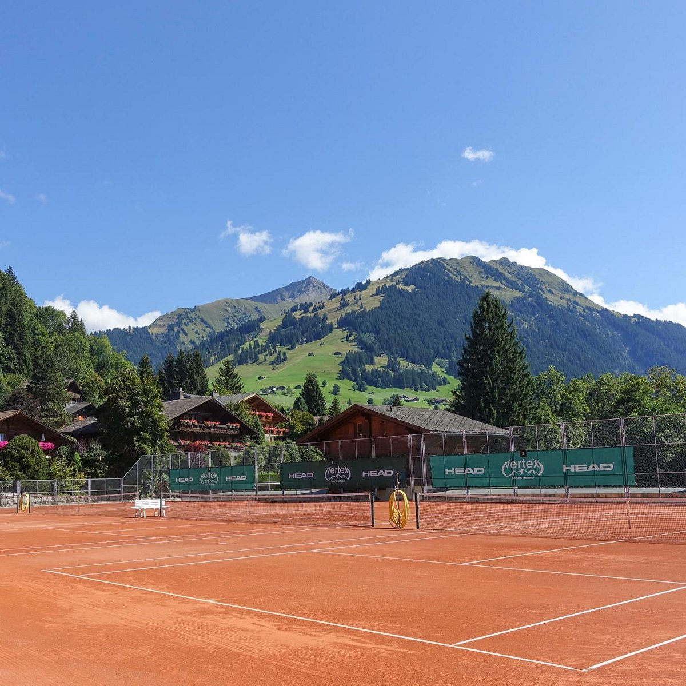

Chalet-side clay courts in the Alps, home to an annual stop on the pro tour — the turreted palace above Gstaad.
The Gstaad Palace earned #07 on my tennis ranking with a credential no other hotel on the list can claim: its chalet-side clay courts in the Alps are home to an annual stop on the professional tour. When the pros choose your hotel's courts, the ranking writes itself.
The Palace is Gstaad — a turreted family-run landmark above the village that has anchored the town's social season for over a century. Summer here is the insider's play: green alpine meadows, tournament tennis, and palace service at the season when most travelers only think of Switzerland for snow.
It's a Fora Reserve property in my partner book, and alongside Bürgenstock it gives Switzerland two spots on my worldwide tennis list — a two-stop alpine circuit I love building.

Courts the pro tour plays. Chalet-side clay hosting an annual tour stop — hit on the same surface the professionals do, with the Alps as the fence line.
A true palace, family-run. Over a century of the same standard, and the building that defines Gstaad's skyline.
Summer in the Alps. Meadow hiking, tournament week, and alpine light — the season Gstaad insiders actually prefer.
Time it to the tournament — or around it. Tour week is electric and books solid; the weeks either side give you the courts and the calm. Tell me which energy you want.
Winter is a different trip. The Palace runs a full ski season too — same address, entirely different rhythm.
Pair it with Lake Lucerne. Bürgenstock is the other Swiss court on my list — together they make Switzerland's best tennis itinerary.
Chalet-side clay the pro tour visits every year — if you take your tennis seriously, the Palace takes it just as seriously.
Rates through me are identical to booking direct — the perks are not. As a Fora advisor, my clients receive a space-available upgrade, daily breakfast, and a hotel credit — plus my direct line to the team on property before and during your stay.
Check Availability